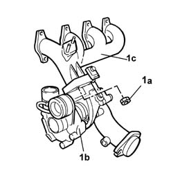
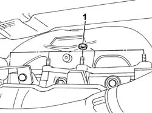
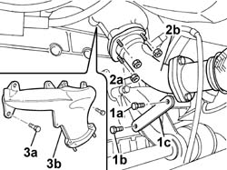

1072C10 EXHAUST MANIFOLD - R + R AND REPLACE SEAL
- Path
- Procedures > 10 ENGINE UNIT > 1072 INLET AND EXHAUST MANIFOLDS > 1072C EXHAUST MANIFOLDS > 1072C10 EXHAUST MANIFOLD - R + R AND REPLACE SEAL
- Kind
- repair procedure (removal / refitting; the operation number is the code)
- Applies to
- engines: 2.0 16V, 2.8 JTD 8V; all production periods
- Interactive page
- https://sloeber94.github.io/elrnDB-fDct/en/#/244000875
Applies to: engines: 2.8 JTD 8V; all production periods
 Removing
Removing
 Refitting
RefittingSee in Op. 1080C10
See in Op. 1048A21
See in Op. 1080C17
See in Op. 1080C16
Op. 1080C50 PIPE CARRYING EXHAUST GAS TO E.G.R. VALVE - R + R
Op. 1048A41 SLEEVE FROM DEBIMETER TO TURBOCHARGER - R R
See in Op. 1084B40
See in Op. 1048B10
Op. 1076B14 EXHAUST PIPE WITH CATALYTIC CONVERTER - R R
See in Op. 1064A19
- At the bench.
- With the assembly at the bench, position the exhaust manifold and turbocharger assembly in the vice.
1. Undo the fixing nuts (1a) and separate the turbocharger (1b) from the exhaust manifold (1c).

Applies to: engines: 2.8 JTD 8V; all production periods
Refitting
Removing- Replace the gasket with a new one.
- Place the exhaust manifold in position on the turbo and tighten the fixing nuts checking the torque.
 | Value - daNm | Fastening | Component | Ø |
|---|---|---|---|---|
. | 2,5 | Nut | EXHAUST MANIFOLD/S | M8 X 1,25 |
- Remove the assembly from the vice.
See in Op. 1064A19
Op. 1076B14 EXHAUST PIPE WITH CATALYTIC CONVERTER - R R
See in Op. 1048B10
See in Op. 1084B40
Op. 1048A41 SLEEVE FROM DEBIMETER TO TURBOCHARGER - R R
Op. 1080C50 PIPE CARRYING EXHAUST GAS TO E.G.R. VALVE - R + R
See in Op. 1080C16
See in Op. 1080C17
See in Op. 1048A21
See in Op. 1080C10
Applies to: engines: 2.0 16V; all production periods
Removing
Refitting1. Undo the upper nuts fixing the exhaust manifold to the cylinder head.

Applies to: engines: 2.0 16V; all production periods
Op. 7055B54 UNDER-ENGINE GUARD - R R
1. Undo the bolt fixing the exhaust pipe to the bracket (1a), loosen the bolt securing the bracket to the gearbox (1b) and move the bracket (1c) aside.
2. Undo the nuts fixing the exhaust manifold to the pipe (2a) and move the exhaust pipe (2b) aside.
3. Undo the lower fixing nuts (3a) and remove the exhaust manifold (3b).

Applies to: engines: 2.0 16V; all production periods
Refitting
Removing- Fit the exhaust manifold in position and tighten thelower fixing nuts checking the torque.
- Tighten the nuts fixing the exhaust manifold to the exhaust pipe and check the torque.
- Fit the exhaust pipe mountin bracket and tighten the fixing nuts checking the torque.
- Tighten the upper nuts fixing the exhaust manifold to the cylinder head and check the torque.